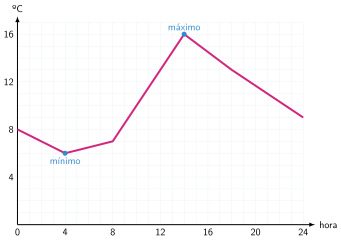
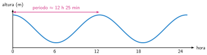

Características de una función
Para estudiar una función a partir de su gráfica usaremos este ejemplo: la temperatura en Astillero a lo largo de un día de primavera.

Dominio y recorrido
Cuando la función viene dada por una fórmula, hay valores que no se pueden usar: en \(f(x) = \dfrac{1}{x - 3}\) no podemos tomar \(x = 3\), porque no se puede dividir entre 0; y en \(f(x) = \sqrt{x - 2}\) solo podemos tomar \(x \geq 2\), porque no existe la raíz cuadrada de un número negativo. El contexto también limita el dominio: el lado de un cuadrado no puede ser negativo.
Continuidad
Crecimiento, máximos y mínimos
Puntos de corte con los ejes
Halla los puntos de corte con los ejes de \(f(x) = 2x - 6\) y de \(g(x) = x^2 - 9\).
Funciones periódicas
Algunos fenómenos naturales se repiten cada cierto tiempo. En la bahía de Santander, la marea sube y baja con un ciclo de unas 12 horas y 25 minutos: la altura del agua es una función periódica.
